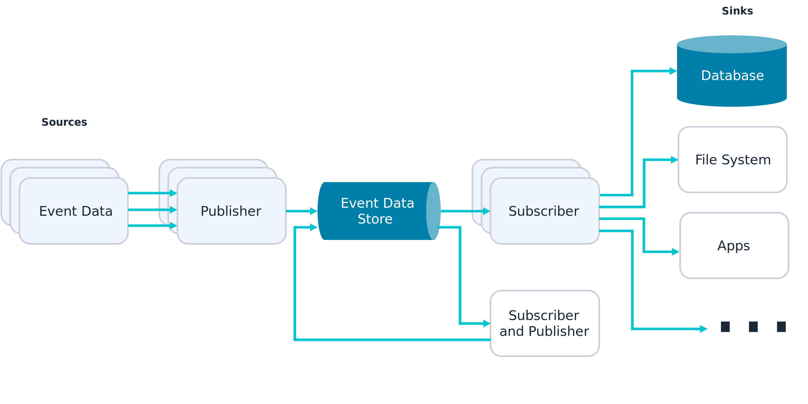
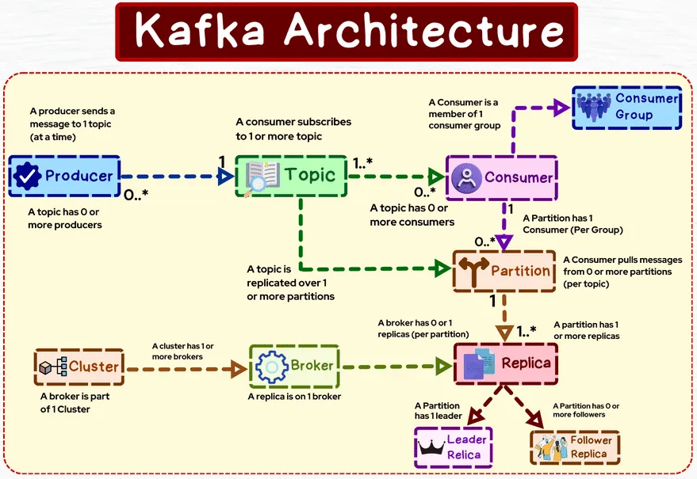
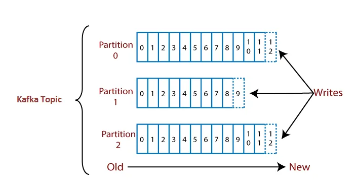

/
On this page
Event-Driven Architecture
An event-driven architecture uses events to trigger and communicate between decoupled services and is common in modern applications built with microservices (this is related to the Observer design pattern).
An event is a change in state, or an update, like an item being placed in a shopping cart on an e-commerce website. Events can either carry the state (the item purchased, its price, and a delivery address) or can be identifiers (a notification that an order was shipped).
Event-driven architectures have three key components: event producers, event routers, and event consumers. A producer publishes an event to the router, which filters and pushes the events to consumers. Producer services and consumer services are decoupled, which allows them to be scaled, updated, and deployed independently.

The main advantages of event-driven architecture are improved responsiveness, scalability, and agility in business. The ability to respond to real-time information and quickly and easily add new services and analytics significantly improves business processes and the customer experience.
Concepts
Event Broker
An event Broker is a middleware (which can be software, an appliance, or SaaS) that routes events between systems using the publish-subscribe messaging pattern. All applications connect to the event broker, which is responsible for accepting events from senders and delivering them to all systems subscribed to receive them.
Topics
Events are tagged with metadata that describes the event, called topic. A topic is a hierarchical text string that describes what’s in the event. Publishers just need to know what topic to send an event to, and the broker takes care of delivery to systems that need it.
Application users can register their interest in events related to a given topic by subscribing to that topic. They can use wildcards to subscribe to a group of topics that have similar topic strings.
By using the correct topic taxonomy and subscriptions, you can fulfill two rules of event-driven architecture:
- A subscriber should subscribe only to the events it needs. The subscription should do the filtering, not the business logic.
- A publisher should only send an event once, to one topic, and the event broker should distribute it to any number of recipients.
Event Mesh
An event mesh is created and enabled through a network of interconnected event brokers. It’s a configurable and dynamic infrastructure layer for distributing events among decoupled applications, cloud services, and devices by dynamically routing events to any application, no matter where these applications are deployed in the world, in any cloud, on-premises, or IoT environment.
Technically speaking, an event mesh is a network of interconnected event brokers that share consumer topic subscription information and route messages amongst themselves so they can be passed along to subscribers.
Deferred Execution
The essence of event-driven architecture is that when you publish an event, you don’t wait for a response. The event broker “holds” (persists) the event until all interested consumers accept or receive it, which may be sometime later.
Eventual Consistency
Since you don’t know when an event will be consumed and you’re not waiting for confirmation, you can’t say with certainty that a given database has fully caught up with everything that needs to happen to it and doesn’t know when that will be the case.
If you have multiple stateful entities (database, MDM, ERP), you can’t say they will have exactly the same state; you can’t assume they are consistent. However, for a given object, we know that it will become consistent eventually.
Choreography
To coordinate a sequence of actions being taken by different services, you could choose to introduce a master service dedicated to keeping track of all the other services and taking action if there’s an error. This approach, called orchestration, offers a single point of reference when tracing a problem, but also a single point of failure and a bottleneck.
With event-driven architecture, services are relied upon to understand what to do with an incoming event, frequently generating new events. This leads to a “dance” of individual services doing their own things but, when combined, producing an implicitly coordinated response, hence the term choreography.
Apache Kafka
Apache Kafka is an open source, distributed, event streaming platform that processes real-time data. Kafka excels at supporting event-based applications and creating reliable data pipelines, offering low latency and high-speed data distribution.
Architecture

Topics. Data is organized into topics, which are essentially feeds of messages. Topics can be thought of as a category or a stream of data. Each message in Kafka is a key-value pair, with also a timestamp. Topics are partitioned to enable parallel processing and scalability.
Partitions. Each topic is divided into one or more partitions, to allow for parallel processing and horizontal scalability, by distributing data across multiple servers. Each partition is an ordered, immutable sequence of messages (once data is written to a partition, it cannot be changed). Each message in a partition gets an incremental ID, called offset.
Brokers. They are responsible for storing and managing data, handling requests from the right producers and consumers, and replicating data for fault tolerance. Each broker is identified by an ID, and can have one or more partitions of different topics. Data is only kept for a limited time: default is 1 week but can be configured.
Cluster. A group of one or more brokers working together to manage and store data across multiple topics and partitions. Brokers can be added dynamically to a cluster (Horizontal Scrolling).
Cluster Controller. A special broker within a cluster responsible for managing administrative tasks within the cluster and these responsibilities make this broker a special broker from other brokers of the same cluster. It monitors the health of other brokers, handles leader elections, and coordinates partition reassignment and broker metadata updates.
Producers. Applications that publish data to Kafka topics. They write messages to brokers, specifying the topic and, optionally, a key. Producers can choose to send messages to a specific partition or let Kafka choose the partition using a partitioning strategy. If the Key is passed then the Producer has a guarantee that all messages for that key will always go to the same partition.
Producers can choose to receive acknowledgment of data writes:
- Acks = 0: producer won’t wait for an acknowledgment (possible data loss).
- Acks = 1: producer will wait for leader acknowledgment (limited data loss).
- Acks = all: leader + replica acknowledgment (no data loss).
Consumers. Applications that subscribe to topics and process the messages in them. Consumers read messages from partitions in a topic in the order they were written. Kafka allows for both parallel processing and fault tolerance by allowing multiple consumers to form consumer groups. Each message in a partition is consumed by only one consumer within a consumer group.
Consumer Groups. Sets of consumers that jointly consume and process data from a topic. Each consumer within a group is assigned to one or more partitions of the topic. Kafka ensures that messages within a partition are delivered to only one consumer in each consumer group, enabling parallel processing while maintaining order. You can’t have more consumers than partitions (otherwise some will be inactive).
Replication. Kafka provides fault tolerance through data replication. Each partition has one leader and one or more followers. The leader handles all read and write requests for the partition, while the followers replicate the data from the leader. If a leader fails, one of the followers is elected as the new leader.
ZooKeeper. Kafka uses Apache ZooKeeper for managing and coordinating its cluster. ZooKeeper keeps track of broker metadata, leader election, and consumer group coordination. However, starting from Kafka version 2.8, Kafka is moving towards removing its dependency on ZooKeeper and adopting a self-managed metadata approach.
ZooKeeper cluster. A group of one or more ZooKeeper servers working together to provide coordination and management services for distributed systems like Apache Kafka.
Consumer Workflow in Detail
Offsets play a crucial role in managing the position of consumers and ensuring that they can correctly process messages in the right order. Offsets won’t be reused, they keep increasing incrementally as you send messages into your Kafka topic; that also means the order of messages is guaranteed only within a partition but not across partitions.

Committing an offset means saving the offset information to kafka brokers. This process is used to keep track of which messages have been successfully processed by the consumer. If the consumer restarts or crashes, it can resume processing from the last committed offset, ensuring that messages are not reprocessed or skipped.
Auto Offset Commit. Kafka clients can be configured to automatically commit offsets at regular intervals using the
enable.auto.commitconfiguration. This strategy introduces the potential message loss in the case of application failure, because the application may terminate before it finishes processing a particular message, but auto commit may have been made. In this case committed offsets will never be consumed again. Sometimes auto commit could also lead to duplicate processing of messages in case consumer crashes before the next auto commit interval.Manual Offset Commit. Consumers can also commit offsets manually using APIs. This provides more control and allows offsets to be committed after certain application-defined events, such as after processing a batch of records. One downside of this synchronous commit is that it may have an impact on the application throughput as the application gets blocked until the broker responds to the commit request.
Storing an offset refers to the act of keeping the current offset in a local variable or in-memory data structure within the consumer application during processing. You can store the processed offsets in local, and then commit them in bulk. Offset committing and storing offset are not alternatives but complementary to each other.
For same programming languages, there is no storing offset mechanism, so you have to store offsets yourself, then commit in bulk. But for some languages, there are mechanisms that enable this behavior. Confluent recommends enabling auto commit and disabling EnableAutoOffsetStore, instead of manual offset commits, in order to be in full control of what offsets will be committed.
var config = new ConsumerConfig
{
EnableAutoCommit = true
EnableAutoOffsetStore = false
}
...
while (!cancelled)
{
var consumeResult = consumer.Consume(cancellationToken);
// process message here.
// store only processed offsets. Offset commiting will be done automatically
consumer.StoreOffset(consumeResult);
}TODO continue from here https://eryilmaz0.medium.com/designing-event-consumers-everything-about-commit-offsets-in-kafka-23d3f88472bd